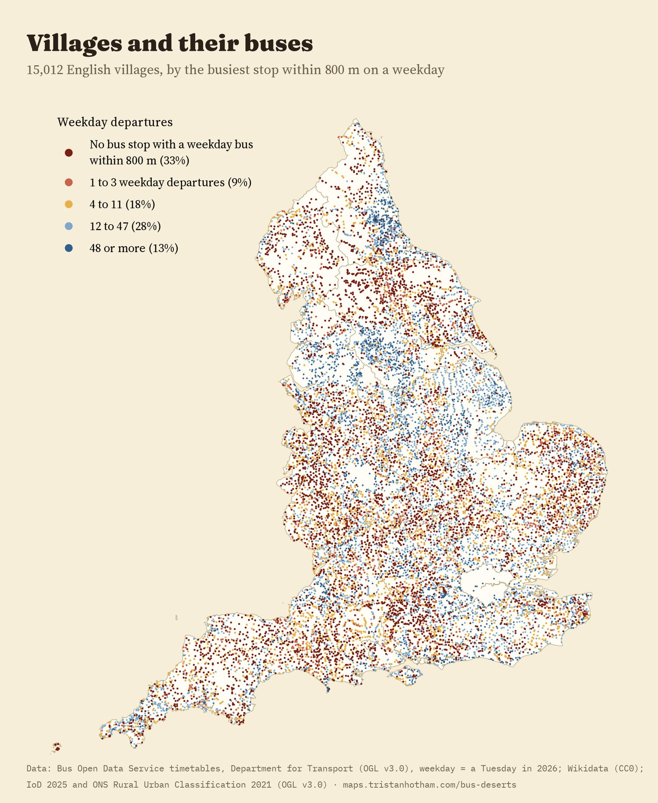
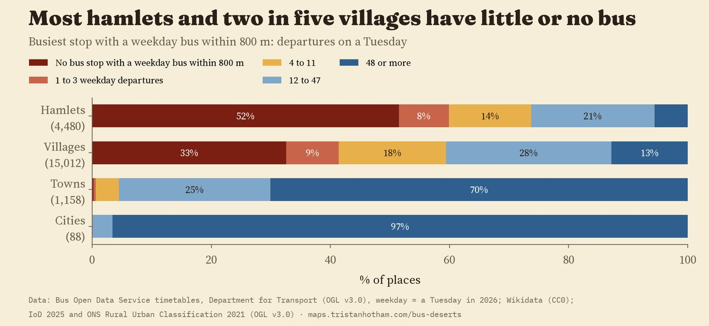
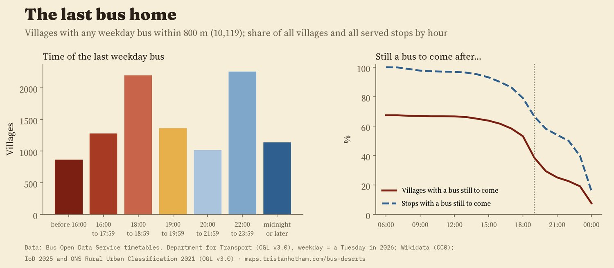
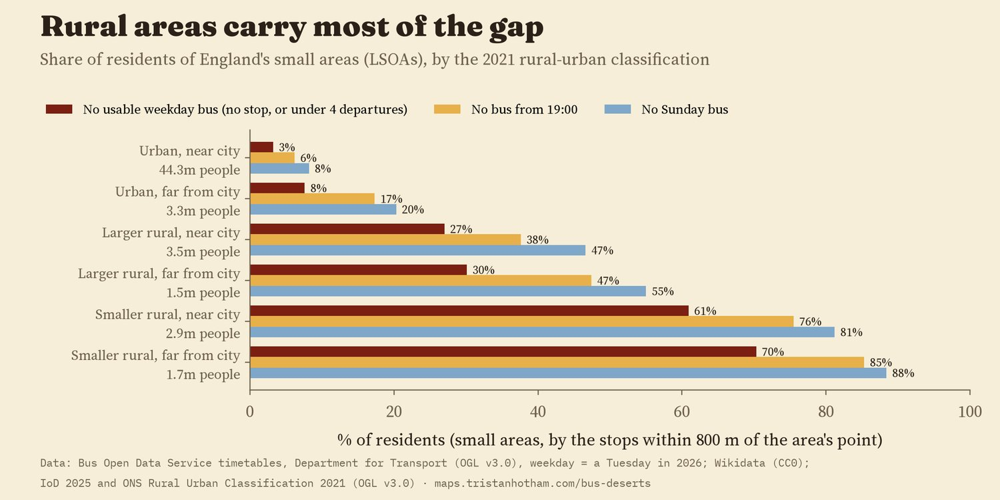
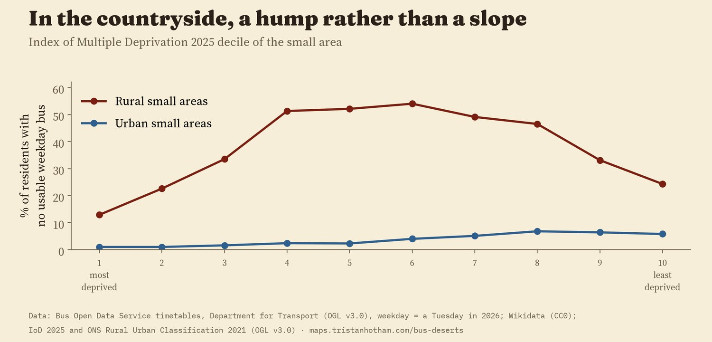
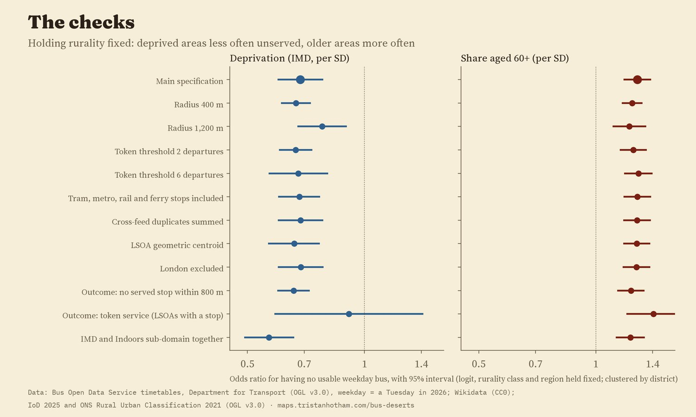
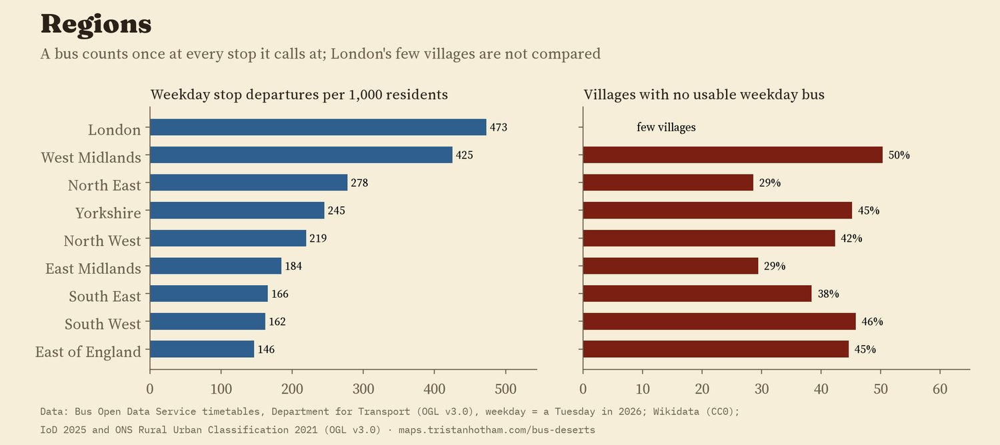

Every bus stop in England's timetables, by how many buses leave it on a weekday, when the last one goes and whether anything runs on Sunday. Squares are villages: red ones have no stop with a weekday bus within 800 m. Drag the clock (villages hide while it runs) to see the network shut down for the night.
How far is your nearest bus, and when does the last one leave? I took the timetables that bus operators in England publish through the Department for Transport's Bus Open Data Service, counted the buses leaving every stop on an ordinary Tuesday, Saturday and Sunday, and then looked at every village in Wikidata to see what it actually gets.
I checked 15,012 English villages. For 4,891 of them (33%), no stop within 800 metres, about a ten minute walk, had a single bus on the Tuesday. For 2,966 (20%) the nearest bus was more than 1.6 km away. Another 1,318 (9%) had a stop with one to three buses all day, which is often not enough to get somewhere and back. Together that is 6,209 villages, 41%, without what I call a usable weekday bus. Hamlets fare worse (60%); towns are almost all served (7 of 1,158 are not).

Each dot is a village, coloured by its busiest stop within 800 m.

The smaller the place, the thinner the service.
Having a bus is one thing; getting home on it is another. Of the villages with any weekday bus within 800 m, the last one leaves before 19:00 in 4,342 of 10,119. Across all villages, 62% have no bus from 19:00 and 68% have none on a Sunday. Only 30% have a usable weekday service, an evening bus and a Sunday bus together. By 19:00, 38% of villages still have a bus to come; by 21:00, 25%. The slider on the map shows this happening stop by stop.

Many villages lose their buses around tea time; others are on a trunk route that runs late.
Villages are places, not people, so I also looked at England's 33,755 small areas (LSOAs, about 1,700 people each). 6.0 million people (10.5%) live in one with no usable weekday bus within 800 m of its centre point. In rural areas it is 46% of residents; in urban areas, 3.5%. In the smallest, most remote rural areas it is 70%.

Small areas by the 2021 rural-urban classification.
Before looking, I wrote down three expectations. Rural areas would be worse served: they are, by a wide margin. Holding rurality and region fixed, more deprived areas would be better served, because buses tend to follow the people who use them: they are (odds ratio 0.68 per standard deviation of the deprivation score, 95% interval 0.60 to 0.78), but the pattern inside the countryside is a hump, and it comes from whether there is a stop at all rather than how often buses call. And areas with more older residents would be worse served: they are (odds ratio 1.28, 1.19 to 1.38). 2.0 million people aged 60 and over live in small areas with no usable weekday bus.
One planned check did not pass. A measure of housing condition that should have nothing to do with buses was also linked to poor service, which suggests the rural-urban classes do not capture every difference between places. So treat the deprivation and age results as descriptive patterns, not causes.

Deprivation deciles from the English Indices of Deprivation 2025.

Every planned check of the small-area model.
Counting each bus once at every stop it calls at, England has 260 weekday stop departures for every 1,000 residents. London has 473. Outside London the range runs from 425 in the West Midlands to 146 in the East of England. The share of villages with no usable weekday bus runs from 29% in the North East to 50% in the West Midlands: a region can have a busy city network and a thin rural one at the same time.

Regions are ONS regions; stops are placed by their coordinates.
Buses. The Bus Open Data Service publishes every registered local bus timetable in England as regional GTFS files. I counted the departures from each stop on one Tuesday, Saturday and Sunday in 2026, kept bus and coach stops, and removed stops that appear in two regional files. 251,790 bus stops remain, 246,358 with at least one Tuesday bus.
Places. Villages, hamlets and towns come from Wikidata. For each one I found the nearest stop with a weekday bus, and among stops within 800 m, the busiest one, the last departure and whether anything runs after 19:00 or on Sunday. I read every town flagged as a desert by eye and fixed or removed 8 bad points. Small areas use the English Indices of Deprivation 2025 and the ONS rural-urban classification; I wrote the analysis plan before computing any result.
What this cannot say. It is one week's timetables. School-day-only buses, dial-a-ride services and community transport may be missing or look odd; a few places, such as Hawes in the Yorkshire Dales, have stops in the files but no Tuesday trips. Distances are straight lines, not walks, and each small area is placed at a point inside it, not where most of its people live. A stop departure is a bus calling, not a useful journey.